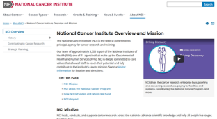
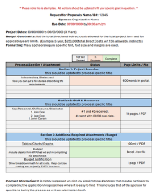
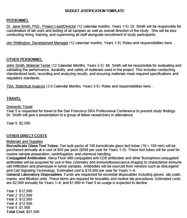

Study the Sponsor
This may appear obvious however it is one of the most common reasons countless applications do not even make it to the review process. Ensure you are reading the entire Request for Proposals (RFP) as well as learning a bit about the sponsor organization. Your project needs to not only align with the RFP in question but with the core values and mission of the sponsor organization. This is doubly true when looking for public funding, as government agencies are required to only fund the projects of which strictly fit into what their mission is.

Example: National Cancer Institute. Lets use an NCI grant for this example. From the main website you can navigate to the linked page and read in detail about exactly what type of work the NCI funds. Make sure to look for mention of current funded organizations and projects as well as sections directly discussing what they look for when releasing grants. Not every site will have all of these specifics, however the vast majority will give you some degree of insight into if your project will fit.
Get Organized
Make a checklist with all the required parts of the application. This should include crucial information such as due dates, attachments, budget restrictions, page/word limits for each section, as well as any other additional instructions crucial to the application process (ie. special signatures/file formats/fonts). This also allows you to track progress of each section which is especially important when various parties are working on different parts.

Links to download grant application checklist:
Word Version Download
Plan in Advance
Plan out who will be responsible for what parts of the application and what parties will need to be contacted to obtain the necessary information to complete each section. Ensure this is done with the overall due date in mind, giving yourself time for discussion and revisions.
Review
After completing a section of the application always re-read yourself, as well as have a third party read through it to ensure everything makes sense to someone not as familiar with the project. Remember that for most grants private or publicly funded the sponsor will have a group (often times 3 or more) reviewers who DO NOT know the intimate details of your organization and operations. For instance one common issue found in reviews is acronyms being used with the assumption others will know what is being referred to. Nothing should be assumed, even if being reviewed by industry “experts”.
Present the Evidence
One of the most commonly seen things reviewers take issue with is claims that are not substantiated by the details to “how” they will be accomplished. Even a very well organized, well written application from a highly respected organization must explain exactly what steps they will take to accomplish the major goals presented in the application. Being surrounded by the day to day activity in your organization may leave you making many assumptions about what others know regarding how the organization does things...however the reviewers or sponsor agency needs to see demonstrable steps to how each goal will be reached.
Budgeting
Having a concise budget that only requests allowable items, and is accompanied by an accurate and relevant justification is highly important. A proposal that looks and sounds good, however is backed up by a messy budget including questionable justifications for items/services can certainly be a reason your proposal is not selected. A justification should only give information that is absolutely required for the sponsor/reviewer to understand exactly why something is being requested. This applies to the entire application in the sense that the ONLY information that should be included is what is being requested. Additional attachments or text regarding what you think is important will only hurt your chances.

Links to download budget justification:
Word Version Download